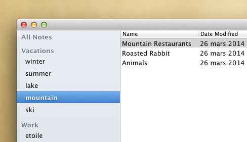
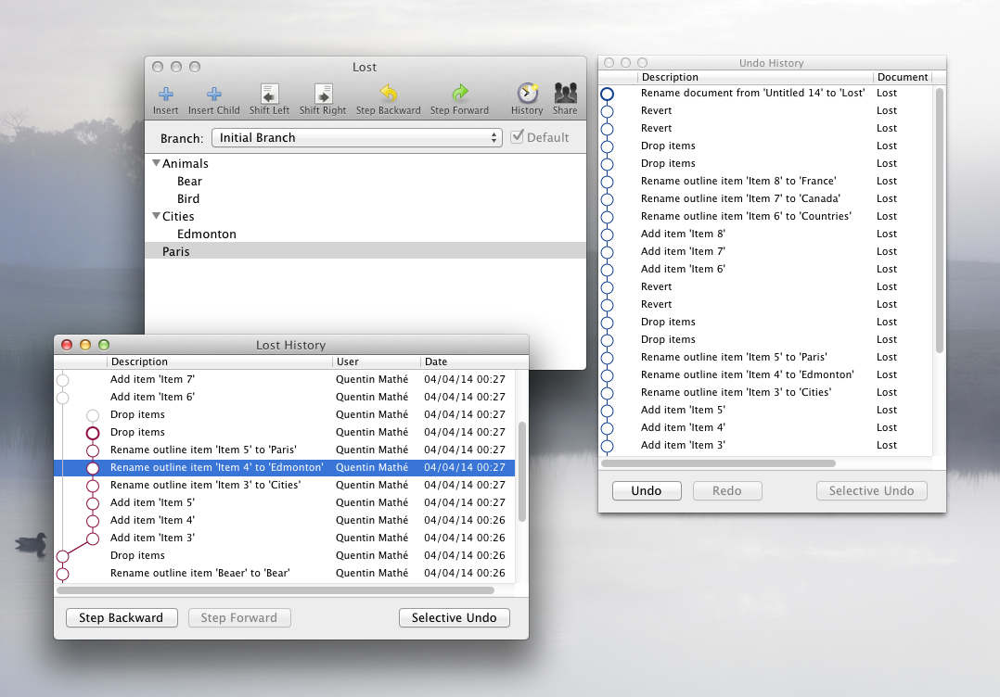

Distributed version control
+
Object persistence
CoreObject is a version-controlled object database for Objective-C that supports powerful undo, semantic merging, and real-time collaborative editing.
User Experience
CoreObject came from imagining how we would use first principles of UI design to write better creativity and productivity apps without being bound by legacy compatibility.
Modern
- No need to explicitly save
- Organize documents by tagging
- Compare document structures and merge changes without converting to plain text
- Document variations (branches), which can be converted to/from document copies
- Navigate history at various granularities (document, activity, etc.)
Resilient
- Undo anything, even document creation/deletion, copying, reverting, or individual changes (selective undo)
- Everything persists across application restarts (including undo/redo)
- Undo history is tree-structured—never lose access to a change
Our idea is to go further than traditional filesystems and databases by supporting document organization, structured documents, version control, rich undo/redo, and collaborative editing in a single framework. CoreObject allows apps to easily adopt all these features and create a coherent user experience, without each app reinventing the wheel in incomplete or incompatible ways.

Open
- Collaborative editing on any document
- Easy data sharing between applications
- Everything is searchable, past and present
Features
CoreObject is a pragmatic OODB with a homegrown DVCS, leveraging SQLite for transactional storage and indexing.
Version Control
- Branches (pointers to the document revision graph, like Git)
- Efficient revision storage inspired by Mercurial
- Orthogonal undo system, can undo all possible modifications to a CoreObject store
- Muliple undo or history views over one or several documents
- Efficient selective undo (unlike OT)
- Based on an object graph diff model (inspired by Difference and Union of Models)
Object Model
- Versatile object model (single, keyed, ordered, or unordered attributes/relationships)
- Value types include string, number, reference within a document, and reference to another document
- Structured data merge works well for most use cases; pluggable merge strategies (with an example styled text merge algorithm)
- Stable serialization format with integrity checking
- Optional organizational model with tags and libraries
- Metamodel-driven copying
- Flexible enough to support complex structured graphics documents
And More…
- Supports large file attachments
- Cheap copy documents (a copy consumes no space)
- Real-time collaborative editing with full undo support per user (inspired by Differential Synchronization)
- Built-in indexing and search including over the history
- Concurrent editing accross multiple applications, with updates propagated transparently to every working copy in memory
Framework
CoreObject has slowly evolved to its current shape. We started discussing the ideas behind it back when Étoilé was founded.
Lean
- Written in Objective-C with ARC
- Minimal dependencies (SQLite and EtoileFoundation)
- Favors exporting JSON
Polished
- Small code base (around 20 000 loc)
- Reasonably large test suite (around 12 000 loc)
- Good debugging support (e.g. render object graph as PDF diagram from debugger)
More than seven prototypes have been written to explore various design choices, until we settled on the current architecture. Although it is still a preview release (don't use it in production and remember the API remains unstable), and several important features are missing (see TODO), the core architecture and API are pretty mature and shouldn't undergo any major changes.

Download
The package includes the EtoileFoundation dependency, the UnitKit test framework, and supports both Cocoa and GNUstep as development environments.
To grab the latest source:
git clone https://github.com/etoile/CoreObject.git